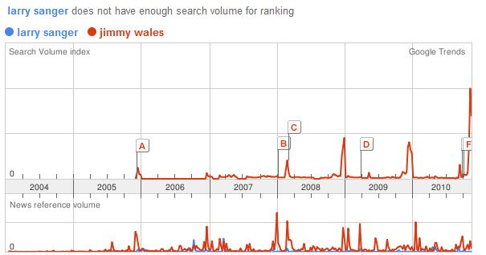

Wikileaks has begun another large-scale dump of classified material, prompting a tweet from Larry Sanger, academic and co-founder of Wikipedia:
@wikileaks Speaking as Wikipedia’s co-founder, I consider you enemies of the U.S.–not just the government, but the people. 12:26 PM Nov 27th via web in reply to wikileaks
Sanger has been largely irrelevant since the failure of Citizendium, a scholarly mediated competitor to Wikipedia, but still maintains a critical position toward the various peer collaborative projects that stray far afield from traditional, curated structures. Wikileaks and its clearinghouse, being the ultimate in uncurated data, must strike Sanger as not only untrustworthy, but literally immoral.
Update: Larry Sanger has clarified his position, best summed up near the end:
I disagree with those people who want government to be so “open”—open far beyond anything any government has ever experienced, open far beyond anything widely thought to be required—that they are perfectly willing to undermine privacy, public safety, and national defense in order to secure that openness. Such people are ideologues, and they are fun for other ideologues to argue with, and occasionally for philosophers too, but they can be safely ignored by more sane, grounded people and those with little time on their hands for philosophy.